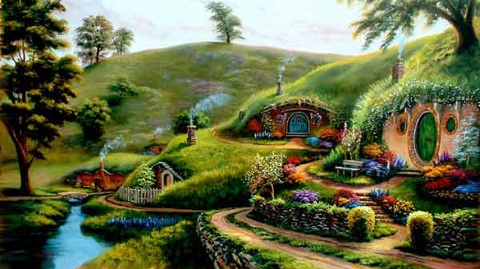

Your adventure begins...

It's a Friday night and after a long week of farming you pop into the Green Dragon for a pint. You see Frodo Baggins, Samwise Gamgee, Pippin Took and Merry Brandybuck sitting at a table and join them. They're talking about an adventure they're going on to Rivendell and ask if you would like to join them. You think about it for a minute, it has been awhile since you've left the Shire, but at the same time, why would you ever want to leave the Shire? What do you do?

You arrive in Rivendell and gasp in awe of how beautiful it is. The elves are so kind, and the food, while lacking meat, is delicious. There is also a never-ending supply of wine. A council is held for the fate of the ring and the Fellowship of the Ring is formed to take it Mordor and destroy it at Mount Doom. Do you join the Fellowship and save Middle Earth? Or do you stay in Rivendell and enjoy the company of elves?

You made it safely through the mines of Moria, but are mourning the loss of your friend and mentor, Gandalf. You want a day to rest and pay your respect but Aragorn makes the group continue moving. Even though the group is moving fast, a deadly group of Uruk-hai arrive and attack. You see Frodo run to the boats and Sam following, while Merry and Pippin are being kidnapped by the Uruk-hai. Do you follow Sam and Frodo? Or fight for Merry and Pippin?

You, Frodo and Sam have spent over a day walking in the same circle trying to find the right road to Mordor. You're hungry, frustrated, and don't know the fate of your other friends. You hear some branches break behind you and watch as Sam captures Gollum, a horrible little creature who has been following you for days. He begs for mercy and promises to take you to Mount Doom to destroy the ring. You know that he was the original ring bearer and he would do anything to get it back, but on the other hand, he does know the way to Mordor and it is 3 vs 1. What do you do?

Even though Gollum deserts you and leaves you for dead, you are able to avoid death by the giant spider, Shelob, and Orcs who kidnap you. The three of you fight hunger and thirst to climb up Mount Doom and are just 20 feet away from the volcanic fire of Mount Doom. Frodo suddenly turns and claims the Ring for his own. Gollum shows up and attacks Frodo for the Ring. As the two wrestle around, the Ring falls to the ground in front of you. As you pick it up to throw into the lava, you suddenly hear someone whisper your name and feel a great surge of power run through you. The voice promises you great power and respect. All you have to do is put the Ring on and become invisible. What do you do?
Even though Gollum deserts you and leaves you for dead, you are able to avoid death by the giant spider, Shelob, and Orcs who kidnap you. The three of you fight hunger and thirst to climb up Mount Doom and are just 20 feet away from the volcanic fire of Mount Doom. Frodo suddenly turns and claims the Ring for his own. Gollum shows up and attacks Frodo for the Ring. As the two wrestle around, the Ring falls to the ground in front of you. As you pick it up to throw into the lava, you suddenly hear someone whisper your name and feel a great surge of power run through you. The voice promises you great power and respect. All you have to do is put the Ring on and become invisible. What do you do?
Even though Gollum deserts you and leaves you for dead, you are able to avoid death by the giant spider, Shelob, and Orcs who kidnap you. The three of you fight hunger and thirst to climb up Mount Doom and are just 20 feet away from the volcanic fire of Mount Doom. Frodo suddenly turns and claims the Ring for his own. Gollum shows up and attacks Frodo for the Ring. As the two wrestle around, the Ring falls to the ground in front of you. As you pick it up to throw into the lava, you suddenly hear someone whisper your name and feel a great surge of power run through you. The voice promises you great power and respect. All you have to do is put the Ring on and become invisible. What do you do?
Riders of rohan q4b text
q5b para here
q6b para text here
q7b para text here
You watch as the Ring flies over the edge and Gollum falls after it. You and Sam pick up the badly beaten Frodo and run for your lives out of the cave while it collapses. As the eagles come to save you, a peace and calm finally fills you, knowing you saved Middle Earth. Congratulations! You did it!
You watch as the Ring flies over the edge and Gollum falls after it. You and Sam pick up the badly beaten Frodo and run for your lives out of the cave while it collapses. As the eagles come to save you, a peace and calm finally fills you, knowing you saved Middle Earth. Congratulations! You did it!